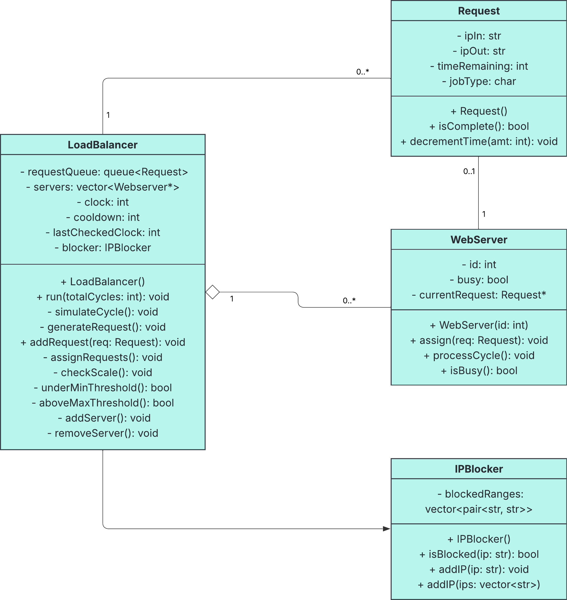

Load Balancer Design Document
The following document will contain a simulation of a large company’s load
balancing system using C++. The system will simulate web requests,
distribute the requests to multiple servers, and scale the number of
servers as needed. The document will contain a UML Diagram that shows the
design of the load balancer. The diagram will show the components of the
load balancer and the relationships between them. In addition, the
document will also show how the load balancer’s workflow works on a high
level.
UML Diagram

Description of UML Diagram
Request
The request class represents a single web request. It encapsulates all the
data that is needed for a single job, and is randomly generated to
simulate a real web request.
Attributes:
- ipIn: The IP address of the client that made the request.
- ipOut: The IP address of the server that processed the request.
-
timeRemaining: The amount of time remaining for the request to be
processed. This will be measured in clock cycles.
-
jobType: The type of job that was requested. This can be either a
processing(“P”) or Streaming(“S”) job.
Methods:
- Request(): The constructor for the Request class.
-
isComplete(): A method that checks to see whether a request is complete
or not. Will return a boolean depending on the value of timeRemaining.
-
decrementTime(int amt): A method that will decrement the value of
timeRemaining by the amount of clock cycles specified.
WebServer
This represents a single instance of a server. It will accept a request
from LoadBalancer and process it for a certain number of cycles
(timeRequired), decrementing timeRemaining as it does so. Once
timeRemaining reaches 0, the request is considered finished and another
request can be processed.
Attributes:
- id
-
busy: Boolean that indicates if the server is currently processing a
request.
-
currentRequest: The request object that is currently being processed.
Methods:
- WebServer(): The constructor for the WebServer class.
-
assign(Request req): A method that will assign a request to the server.
-
processCycle(): A method that will process a request by a single clock
cycle.
-
isBusy(): A method that will check to see if the server is currently
processing a request. Will return a boolean depending on the value of
busy.
LoadBalancer
This is the core class that controls the load balancing of requests. It
will maintain a request queue, assign requests to idle servers, and track
clock cycles. The load balancer will also be responsible for scaling the
number of servers as needed, and provide logging as needed.
Attributes:
- requestQueue: A queue of Request objects.
- servers: An array of WebServer objects.
-
clock: The number of clock cycles that have passed since the start of
the simulation.
-
cooldown: The number of clock cycles that must pass before another check
to determine if the load balancer should be scaled.
-
lastCheckedClock: The precise time at which the load balancer last
checked to see if it should be scaled.
-
blocker: An IPBlocker object that is used to block certain IP address
ranges from accessing the load balancer.
Methods:
- LoadBalancer(): The constructor for the LoadBalancer class.
-
run(int totalCycles): A method that will run the load balancer for the
specified number of clock cycles.
-
simulateCycle(): A method that will simulate a single clock cycle.
-
generateRequest(): Generates a new Request object with randomly
generated IP addresses, job type, and processing time. This simulates
incoming traffic to the system.
-
addRequest(Request req): Adds a Request object to the requestQueue if it
is not within the list of blocked IPs. If the IP is blocked, then the
request should be discarded and logged as such.
- assignRequest(): Method to assign a request to an idle server.
-
checkScale(): Method to check if the load balancer should scale the
number of servers.
-
underMinThreshold(): A method that checks to see if the load balancer
should scale down.
-
overMaxThreshold(): A method that checks to see if the load balancer
should scale up.
- addServer(): Method to add a new server to the array.
- removeServer(): Method to remove a server from the array.
IPBlocker
This class simulates a firewall with a list of blocked IP address ranges.
It will be used to block certain IP address ranges from accessing the load
balancer.
Attributes:
-
blockedRanges: A list of IP address ranges that are blocked from
accessing the load balancer.
Methods:
- IPBlocker(): The constructor for the IPBlocker class.
-
isBlocked(string ip): A method that will check to see if the specified
IP address is blocked from accessing the load balancer. Will return a
boolean depending on the value of blockedRanges.
-
addIP(string ip): A method that will add an IP address range to the list
of blocked IP address ranges.
-
addIP(vector<string> ips): A method that will add multiple IP
address ranges to the list of blocked IP address ranges.
Class Relationships
- LoadBalancer owns and manages WebServer objects.
- LoadBalancer contains queue<Request>.
- WebServer temporarily holds a Request.
- IPBlocker validates a Request before enqueueing.
Program Flow
1. Initialization
-
The initial number of servers and total simulation length is specified
in the main function.
-
A LoadBalancer object is created with the specified number of servers.
-
An IPBlocker object is created with a list of blocked IP address ranges.
2. Simulation
For each clock cycle, the system performs the following:
- Generate new requests
- Assign work to idle servers
- Process requests
- Check to see if the load balancer should scale
- Log results as needed
3. End of Simulation
Once the simulation is complete, the program will print out the final
results, including the number of servers, the total number of requests,
and the total number of requests processed by the servers.
For extra credit, I plan to implement a higher-level switch class that
routes requests based on job type.
Design Plan
-
Create two LoadBalancer objects—one for each job type.
- One dedicated for processing jobs(P)
- One dedicated for streaming jobs(S)
-
The switch class will inspect each incoming request’s type and assign it
to the correct load balancer.